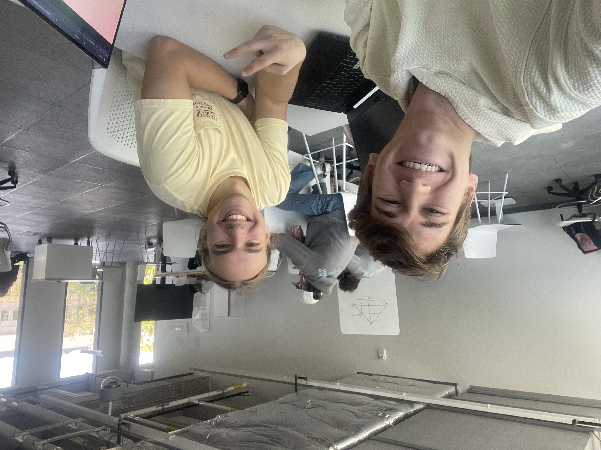

Spring 2023
Jacob Schulmeister V
Tim Kuehn 
jdschul5@iastate.edu
timkuehn@iastate.edu
10/18/2023
This project was completed using a Raspberry Pi 3B+ running html, CSS, Python, and JavaScript. This was connected via USB to an arduino running ADC code that took the analog data from a water depth sensor and converted it to digital Additionally, we took digital sensor data from a DHT 11 that gave humidity and temperature sensors. This project was designed to be mounted in the bilge of a boat so that the state of the boat is easily readable from at the helm. The code for the ADC is in "waterlevel.ino"
Dr. Aldaco